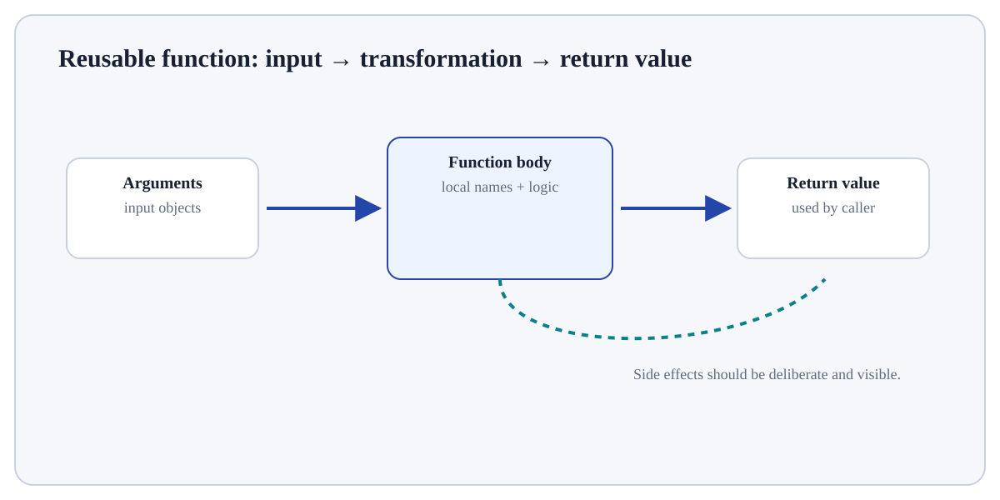

Follow the transformation
Define the function with def (or a lambda for a small expression).
Bind supplied arguments to parameters when the function is called.
Execute the indented function body in a local scope.
Functions as Values concerns reusable Python functions.
Functions as Values concerns reusable Python functions. A function packages a sequence of statements behind a name, receives inputs through parameters and can return an output. Functions create local scope and are first-class objects, so they can be stored, passed and composed.
Functions as Values matters because functions are the main unit for turning repeated logic into reusable, testable interfaces. Clear inputs, scope and returned outputs make larger programs easier to reason about than long sequences of top-level statements.
Treat this as a sequence of observable decisions rather than one opaque command. Stage 1: Define the function with def (or a lambda for a small expression). Stage 2: Bind supplied arguments to parameters when the function is called. Stage 3: Execute the indented function body in a local scope. Final checkpoint: Use docstrings and type hints to communicate intent; use *args/**kwargs only when variable argument structure is genuinely useful.
Define the function with def (or a lambda for a small expression).
Bind supplied arguments to parameters when the function is called.
Execute the indented function body in a local scope.

Define the function with def (or a lambda for a small expression). This is an input-preparation stage for Functions as Values. Verify the relevant type, shape, units, keys, missingness or assumptions before later steps depend on them.
# Step 1 — Define the reusable `kpi_rate` function; its indented body describes what happens for each call.
def kpi_rate(successes: int, total: int = 100) -> float:
# Step 2 — Execute this statement and inspect how it changes the current value, object or program state.
"""Return success percentage; reject impossible denominators."""
# Step 3 — Evaluate this condition and execute the indented branch only when the condition is true.
if total <= 0:
# Step 4 — Raise an explicit exception to signal that the required condition or input contract was violated.
raise ValueError("total must be positive")
# Step 5 — Return the computed value to the caller so the result can be reused or tested.
return 100 * successes / total
# Step 6 — Display the current value explicitly so the result/state can be inspected during execution.
print(kpi_rate(42, 60))
# Step 7 — Display the current value explicitly so the result/state can be inspected during execution.
print(kpi_rate(successes=75))70.0 75.0
For Functions as Values, connect the displayed result to the specific input and mechanism above; independently verify one value/state change rather than treating successful execution as proof.
parameterName in the function definition.argumentValue supplied at a call site.returnValue sent back to the caller.yieldProduces a sequence lazily from a generator, pausing function state between values.Use Functions as Values when the program genuinely needs this language behaviour and you can state the input object, resulting value/state and expected failure behaviour.
Choose a clearer built-in, data structure or control-flow pattern when it expresses the intent more directly; stop if implicit conversion, mutation or hidden state makes the behaviour hard to reason about.
Build a tiny, inspectable example of Functions as Values. First define the function with def (or a lambda for a small expression). Then bind supplied arguments to parameters when the function is called. Write the expected result before running it, and explain one condition that would make the result misleading or invalid.
Before trusting a result from Functions as Values, which check provides the strongest evidence that you understand and applied it correctly?
Step 1Define the function with def (or a lambda for a small expression).Step 2Bind supplied arguments to parameters when the function is called.Step 3Execute the indented function body in a local scope.Step 4return sends a value back to the caller and stops that call; without an explicit return, the result is None.